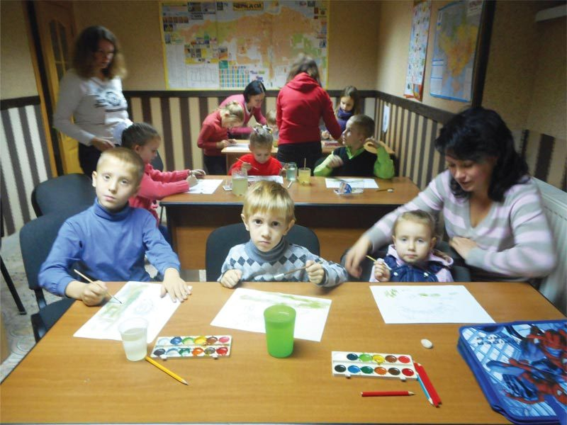

In Ukraine, families and schools pay for much that we'd take for granted — pens, books, equipment, the chance to study at all. Hope Now helps where it can, from the very youngest children to university students.
Support for schools
Hope Now is keen to support education, and works in or supports several of the State schools in Cherkassy as well as a private Christian school.
Pens, books and equipment all have to be paid for by the schools or the parents, so a little help goes a long way.
Twinning with UK schools
Crestwood College in Eastleigh, Hampshire, has twinned with School No. 20 in Cherkassy, giving pupils the chance to have penpals in Ukraine. Crestwood have also supplied funding.
Student sponsorship
For many years Hope Now has run a student sponsorship scheme, helping Christians from poor families attend universities and colleges. Each student is interviewed and means-tested, and is taken on only as individual sponsorships become available.
In return, every sponsored student gives at least two weeks of service back to Hope Now.

Alpha House English classes
Our headquarters in Cherkassy is also home to the Early Learning Centre, where children as young as four begin learning English and art. Volunteer teachers come in once a week to teach and encourage their young pupils.

Why it matters
How you can help
Your gift buys books and equipment, sponsors a student through college, and keeps the Early Learning Centre's doors open.